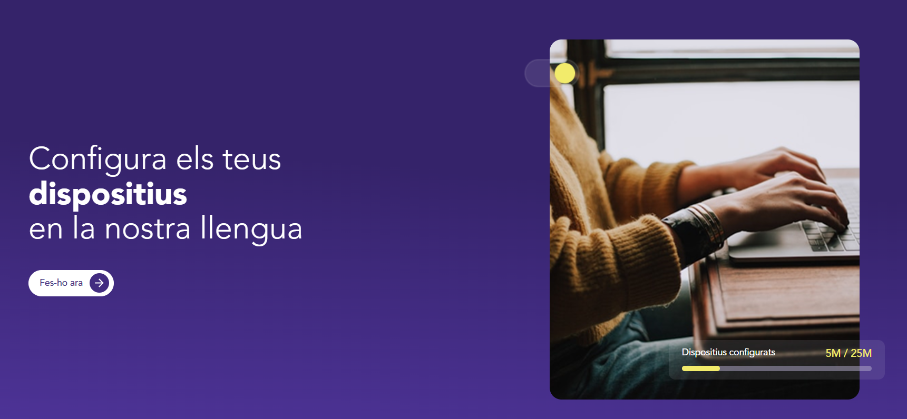
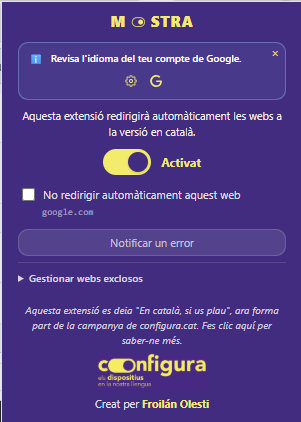

Com ha quedat la cosa?
Aquesta adapatació, per això, comporta un rentat de cara absolut. De fet, l'extensió passarà a dir-se Mostra, per estar en consonància amb altres eines de la campanya. També canviarà el logo i la identitat visual per tal d'adaptar-se a la paleta de colors i tipografia de Configura.cat.
Aquí podeu veure com quedaria:

Com podeu veure, ens hem carregat el logo de la llengua dels Rolling (es veu que s'ha fet servir a moltes altres campanyes pel català i que aquí es buscava una identitat més pròpia) i hem adoptat els colors lila i groc de la paleta de Configura.cat.
A nivell de funcionalitat, també tenim canvis. L'extensió ara pot detectar l'idioma en què tens configurat el navegador i t'ho notifica dintre d'aquest menú. Et proporciona dos links: un que et porta a la pàgina del teu navegador on es determinen les preferències d'idioma de Chrome i un altre que et porta a la pàgina de Configura.cat per obtenir més informació. També tindrà una altra notificació per ajudar-te a configurar en català el teu compte d'usuari del navegador en qüestió. En el cas de Chrome, et redirigeix a la configuració del teu compte perquè tota la interacció que tinguis amb Google sigui preferiblement en català.
A partir d'ara
Amb l'ajuda d'aquest conglomerat d'organitzacions que conformen l'Aliança per la presència digital del català, impulsada per Accent Obert, Òmnium, Plataforma per la Llengua i Softcatalà, esperem que l'extensió torni a tenir un moment de viralitat i arribi a encara més usuaris. L'objectiu és que el màxim de gent possible tingui en tot moment la garantia de poder navegar en el seu idioma de preferència, en català en aquest cas, i que en la mida del que sigui possible s'enviï el missatge als motors de cerca que el català és un idioma amb presència, ús i pes digital.
Busquem:
- Més visibilitat de l'eina en comunitats digitals en català.
- Una millor adopció de les noves funcionalitats.
- Mantenir una comunicació clara i directa amb els usuaris per tal de facilitar i assegurar l'accés a l'extensió.
Quan estarà disponible?
A mitjan juliol, l'extensió Mostra estarà disponible a tot arreu (encara ens manca una data exacta) per a tots els usuaris interessats. Si ja teniu l'extensió, l'actualització serà automàtica, així que no haureu de fer cap acció extra.
En breus, treurem un video explicatiu sobre totes les funcionalitats, les noves i les velles, perquè tothom pugui aprofitar al màxim el potencial de l'extensió (encara avui hi ha gent que no s'ha adonat que es poden el·lidir dominis dintre de l'aplicació; si ets una d'aquestes persones, estigues atenta a l'estrena d'aquest video).
Moltes ganes que això surti ja, un dia més un dia menys.